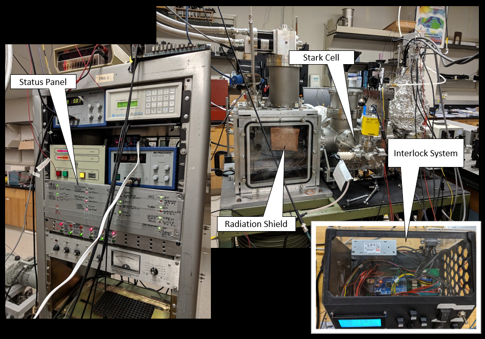
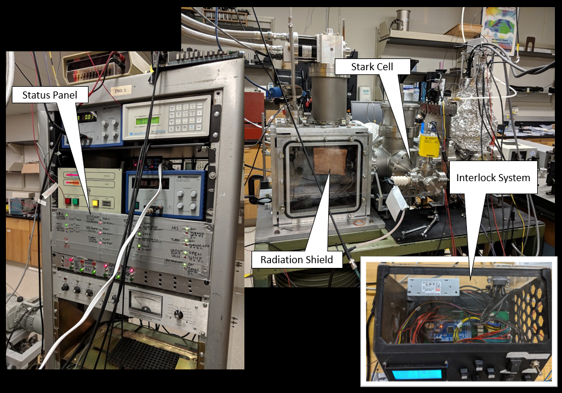

Introduction
We use a variety of spectroscopic techniques in order to satisfy our curiosity of the physical world. These techniques are high in resolution, and span the lower end of the electromagnetic spectrum (microwave to infrared). We use them to investigate small molecules and complexes in an effort to improve our understanding of atmospheric chemistry, astrochemistry, combustion chemistry, and superfluidity. This page is a brief overview of the techniques we utilize.
Techniques
The laser lab at JMU houses a HeNDI spectrometer that is used to investigate molecules and complexes at ultra-low temperature (0.4 K). Helium nanodroplets provide a gentle medium for the study of chemical dynamics at the molecular level. Their low temperature, enormous heat conductivity, and weakly interacting nature allow for the formation of species that are often inaccessible by conventional synthetic means. The following photo shows JMU’s student-built helium nanodroplet isolation spectrometer highlighting several key features:
 

We utilize this instrument to investigate radicals and weakly bound complexes like the carbonyl sulfide dimer.
We are currently building an Infrared laser jet spectrometer for investigating microscopic superfluidity in the infrared spectral region. Unlike the HeNDI spectrometer shown above, which is used to investigate species solvated in somewhat large helium nanodroplets (103-104 atoms), this apparatus will be used to investigate species solvated in smaller helium nanodroplets (<103 atoms). Both use similar laser systems, although the HeNDI technique is slow-scan (1 cm-1 in 1 min), while the laser Jet spectrometer will be rapid-scan (1 cm-1 in 1 ms). Here is the birth of JMU's infrared laser Jet spectrometer:

We will utilize this instrument to investigate the quantum solvation of various types of molecules (linear and nonlinear).
We have collaborations with research groups that house CP-FTMW spectrometers. One of them is the Jäger research group at the University of Alberta, where we visit to investigate microscopic superfluidity in small quantum solvated clusters (these experiments will complement the infrared experiments mentioned directly above). The other research group is the Grubbs research group at Missouri S&T. JMU students are building a variety of discharge sources for coupling to the Grubbs' CP-FTMW spectrometers. The following photos on the left shows one of the discharge assemblies along with an oscilloscope trace of the current (that flows through the gas), and the photo on the right shows the high voltage source and student-built pulser (with green light):

We plan to produce exotic radicals and weakly bound complexes with these discharge sources, which we will characterize by CP-FTMW spectroscopy.
Synchrotrons offer high brightness far-infrared radiation that is very useful for investigating low-frequency vibrations. We utilize them for investigating somewhat floppy molecules that are relevant to the atmosphere and interstellar space. Lately, we have been focusing on understanding the torsional dynamics of small gas-phase molecules like vinyl alcohol and formic acid. These experiments are performed at the Australian Synchrotron and the Canadian Light Source.